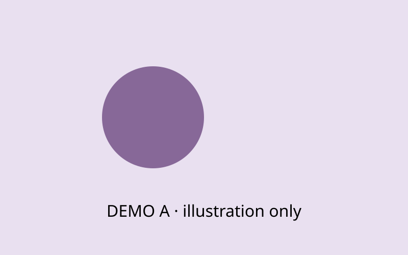

NKU26 / COMPONENT SHOWROOM / LOCAL PREVIEW
把内容，变成
看得懂的页面。
给湿实验、干实验、HP 和设计组的组件选型展厅。先操作效果，再记下编号；不必先准备素材。
临时本地展示。除注明来源的公开文件外，图形、数字、序列与人物均为演示内容，不代表 NKU 项目成果。
COMPONENT 01 / 湿实验 · 干实验
工程循环分栏
点击四个阶段切换；适合讲清一轮工程循环。
Cycle 02 · Design → Build → Test → Learn
后台怎么添加？需要什么材料？
进入 Tina → Wiki 内页 → 选择页面 → 正文排版「＋」。选择下列模块，再填写内容。
- 分栏切换 / 工程循环：准备标题、正文和条目顺序；如涉及引用，请附来源。
选型时只需反馈组件编号和使用页面，暂时没有素材也可以先加入候选。
COMPONENT 02 / HP · 全组
折叠访谈与问答
逐条展开，保留较长访谈内容而不占满页面。
Stakeholder interview · 访谈记录
后台怎么添加？需要什么材料？
进入 Tina → Wiki 内页 → 选择页面 → 正文排版「＋」。选择下列模块，再填写内容。
- 折叠问答 / 访谈记录：准备标题、正文和条目顺序；如涉及引用，请附来源。
选型时只需反馈组件编号和使用页面，暂时没有素材也可以先加入候选。
COMPONENT 03 / 湿实验 · 干实验 · HP
分类 Notebook 时间线
试试切换组别；跨组事件按阶段展示。
Project notebook · 跨组记录
后台怎么添加？需要什么材料？
进入 Tina → Wiki 内页 → 选择页面 → 正文排版「＋」。选择下列模块，再填写内容。
- Notebook / HP 时间线：准备标题、正文和条目顺序；如涉及引用，请附来源。
选型时只需反馈组件编号和使用页面，暂时没有素材也可以先加入候选。
COMPONENT 04 / 湿实验
步骤与材料清单
勾选步骤查看完成数量；适合方法、流程和材料清单。
文档交付检查流程
后台怎么添加？需要什么材料？
进入 Tina → Wiki 内页 → 选择页面 → 正文排版「＋」。选择下列模块，再填写内容。
- 实验步骤清单：准备标题、正文和条目顺序；如涉及引用，请附来源。
选型时只需反馈组件编号和使用页面，暂时没有素材也可以先加入候选。
COMPONENT 05 / HP · 湿实验 · 设计
相册与大图浏览
点击任意缩略图放大；适合活动记录和多张结果图。
Visual archive · 图像档案
后台怎么添加？需要什么材料？
进入 Tina → Wiki 内页 → 选择页面 → 正文排版「＋」。选择下列模块，再填写内容。
- 多图相册 / 放大阅读：多张原图，每张附标题与图注。
选型时只需反馈组件编号和使用页面，暂时没有素材也可以先加入候选。
COMPONENT 06 / 湿实验 · 干实验 · 设计
双图滑动对比
拖动分界；适合改版、处理前后或两个方案对照。
Design A / Design B
后台怎么添加？需要什么材料？
进入 Tina → Wiki 内页 → 选择页面 → 正文排版「＋」。选择下列模块，再填写内容。
- 前后图片对比：两张对照图片，建议尺寸一致。
选型时只需反馈组件编号和使用页面，暂时没有素材也可以先加入候选。
COMPONENT 07 / HP · 湿实验 · 设计
视频与字幕
原生播放器：播放、进度、音量、全屏；示例配 VTT 字幕。
Video · 演示片段
后台怎么添加？需要什么材料？
进入 Tina → Wiki 内页 → 选择页面 → 正文排版「＋」。选择下列模块，再填写内容。
- 视频 / 字幕：MP4 / WebM，可选封面与 VTT 字幕。
选型时只需反馈组件编号和使用页面，暂时没有素材也可以先加入候选。
COMPONENT 08 / 全组
文件下载集合
CSV、结构、PDF、HTML 均可放进同一下载区。
Supplementary materials
后台怎么添加？需要什么材料？
进入 Tina → Wiki 内页 → 选择页面 → 正文排版「＋」。选择下列模块，再填写内容。
- 附件下载列表：附件原文件、显示名称和版本说明。
选型时只需反馈组件编号和使用页面，暂时没有素材也可以先加入候选。
COMPONENT 09 / 湿实验 · 干实验
大型数据表 / Parts 表
60 行、6 列：搜索、数字排序、翻页。
Parts catalogue · 虚构条目
后台怎么添加？需要什么材料？
进入 Tina → Wiki 内页 → 选择页面 → 正文排版「＋」。选择下列模块，再填写内容。
- 数据表 / Parts 表（搜索排序）：CSV 表格，第一行填写列名。
选型时只需反馈组件编号和使用页面，暂时没有素材也可以先加入候选。
COMPONENT 10 / 干实验 · 湿实验
多系列折线图
可点击图例隐藏系列、悬停查看数据、下载 PNG；下方附可筛选原始表。
Response curves
后台怎么添加？需要什么材料？
进入 Tina → Wiki 内页 → 选择页面 → 正文排版「＋」。选择下列模块，再填写内容。
- 实验数据图表：CSV 数据，首列横轴，其余列为各组数值；补充单位和来源。
选型时只需反馈组件编号和使用页面，暂时没有素材也可以先加入候选。
COMPONENT 11 / 干实验 · 湿实验
分组柱状图
可点击图例隐藏系列、悬停查看数据、下载 PNG；下方附可筛选原始表。
Design comparison
后台怎么添加？需要什么材料？
进入 Tina → Wiki 内页 → 选择页面 → 正文排版「＋」。选择下列模块，再填写内容。
- 实验数据图表：CSV 数据，首列横轴，其余列为各组数值；补充单位和来源。
选型时只需反馈组件编号和使用页面，暂时没有素材也可以先加入候选。
COMPONENT 12 / 干实验 · 湿实验
多系列散点图
可点击图例隐藏系列、悬停查看数据、下载 PNG；下方附可筛选原始表。
Data distribution
后台怎么添加？需要什么材料？
进入 Tina → Wiki 内页 → 选择页面 → 正文排版「＋」。选择下列模块，再填写内容。
- 实验数据图表：CSV 数据，首列横轴，其余列为各组数值；补充单位和来源。
选型时只需反馈组件编号和使用页面，暂时没有素材也可以先加入候选。
COMPONENT 13 / 干实验 · 湿实验
序列检索与注释
长序列、分段高亮、查找和复制；展示 DNA 与蛋白两种。
DNA sequence · 多区域高亮
Protein sequence · 字母与位置
后台怎么添加？需要什么材料？
进入 Tina → Wiki 内页 → 选择页面 → 正文排版「＋」。选择下列模块，再填写内容。
- DNA / 蛋白序列阅读器：单条 FASTA 或序列文本；可选高亮区间。
- DNA / 蛋白序列阅读器：单条 FASTA 或序列文本；可选高亮区间。
选型时只需反馈组件编号和使用页面，暂时没有素材也可以先加入候选。
COMPONENT 14 / 干实验
复杂公式排版
多行方程、矩阵、求和与下标；支持无障碍 MathML。
Model notation
后台怎么添加？需要什么材料？
进入 Tina → Wiki 内页 → 选择页面 → 正文排版「＋」。选择下列模块，再填写内容。
- 数学公式（LaTeX）：LaTeX 公式文本。
选型时只需反馈组件编号和使用页面，暂时没有素材也可以先加入候选。
COMPONENT 15 / 干实验 · 湿实验
可旋转蛋白结构
拖动旋转、缩放；切换丝带/球棍/原子球/表面，自动旋转和复位。
后台怎么添加？需要什么材料？
进入 Tina → Wiki 内页 → 选择页面 → 正文排版「＋」。选择下列模块，再填写内容。
- 蛋白质结构（可旋转）：PDB / CIF 结构文件；可选链与残基编号。
选型时只需反馈组件编号和使用页面，暂时没有素材也可以先加入候选。
COMPONENT 16 / 全组
浏览器原生 PDF
多页公开文档；具体缩略图、搜索、打印等功能随浏览器而异。
后台怎么添加？需要什么材料？
进入 Tina → Wiki 内页 → 选择页面 → 正文排版「＋」。选择下列模块，再填写内容。
- PDF 阅读器：PDF 文件、标题和说明。
选型时只需反馈组件编号和使用页面，暂时没有素材也可以先加入候选。
COMPONENT 17 / 干实验 · HP · 设计
HTML 交互阅读器
拖动参数改变曲线，展示可嵌入的自包含小网页。
后台怎么添加？需要什么材料？
进入 Tina → Wiki 内页 → 选择页面 → 正文排版「＋」。选择下列模块，再填写内容。
- HTML 阅读 / 交互演示：单文件 HTML，或整理好依赖文件的作品文件夹。
选型时只需反馈组件编号和使用页面，暂时没有素材也可以先加入候选。
COMPONENT 18 / 全组
标题、富文本与表格
二至四级标题、强调、引用、列表、链接、代码和表格。
一段完整内容如何组织
正文可以包含 粗体重点、强调文字、跳转到候选清单、行内代码以及脚注式引用 [1]。
小标题：证据与解释
先讲清问题，再呈现证据，最后说明局限。
- 整理材料
- 选择模块
- 核对图文
数据摘要
| 项目 | 方案 A | 方案 B |
|---|---|---|
| 演示指标 1 | 12 | 18 |
| 演示指标 2 | 0.6 | 0.8 |
Sample → Record → Review → Publish
后台怎么添加？需要什么材料？
进入 Tina → Wiki 内页 → 选择页面 → 正文排版「＋」。选择下列模块，再填写内容。
- 章节标题：准备标题、正文和条目顺序；如涉及引用，请附来源。
- 富文本 / 表格：准备标题、正文和条目顺序；如涉及引用，请附来源。
选型时只需反馈组件编号和使用页面，暂时没有素材也可以先加入候选。
COMPONENT 19 / 全组
单图与图注
图片、图注和来源组合。

后台怎么添加？需要什么材料？
进入 Tina → Wiki 内页 → 选择页面 → 正文排版「＋」。选择下列模块，再填写内容。
- 图片与图注：原图、图片说明、图注和来源。
选型时只需反馈组件编号和使用页面，暂时没有素材也可以先加入候选。
COMPONENT 20 / 湿实验 · HP · 设计
双图并排
两张图分别说明，底部可放统一图注。
A · 初始设计
B · 修订设计

Fig. 2 两种图形方案，仅作排版演示。
后台怎么添加？需要什么材料？
进入 Tina → Wiki 内页 → 选择页面 → 正文排版「＋」。选择下列模块，再填写内容。
- 双图并排：两张原图、各自说明和统一图注。
选型时只需反馈组件编号和使用页面，暂时没有素材也可以先加入候选。
COMPONENT 21 / 全组
说明提示框
标题、正文、强调和列表组合。
说明
这是一段 可强调的提示内容。
- 说明结论适用范围
- 补充文件来源
- 指出仍需补充的材料
后台怎么添加？需要什么材料？
进入 Tina → Wiki 内页 → 选择页面 → 正文排版「＋」。选择下列模块，再填写内容。
- 排版模块 → note：准备标题、正文和条目顺序；如涉及引用，请附来源。
选型时只需反馈组件编号和使用页面，暂时没有素材也可以先加入候选。
COMPONENT 22 / 全组
建议提示框
标题、正文、强调和列表组合。
阅读建议
这是一段 可强调的提示内容。
- 说明结论适用范围
- 补充文件来源
- 指出仍需补充的材料
后台怎么添加？需要什么材料？
进入 Tina → Wiki 内页 → 选择页面 → 正文排版「＋」。选择下列模块，再填写内容。
- 排版模块 → tip：准备标题、正文和条目顺序；如涉及引用，请附来源。
选型时只需反馈组件编号和使用页面，暂时没有素材也可以先加入候选。
COMPONENT 23 / 全组
注意提示框
标题、正文、强调和列表组合。
演示内容提示
这是一段 可强调的提示内容。
- 说明结论适用范围
- 补充文件来源
- 指出仍需补充的材料
后台怎么添加？需要什么材料？
进入 Tina → Wiki 内页 → 选择页面 → 正文排版「＋」。选择下列模块，再填写内容。
- 排版模块 → warning：准备标题、正文和条目顺序；如涉及引用，请附来源。
选型时只需反馈组件编号和使用页面，暂时没有素材也可以先加入候选。
COMPONENT 24 / 全组
四列入口卡片
四个带链接的内容入口；小屏自动换行。
后台怎么添加？需要什么材料？
进入 Tina → Wiki 内页 → 选择页面 → 正文排版「＋」。选择下列模块，再填写内容。
- 排版模块 → cards：准备标题、正文和条目顺序；如涉及引用，请附来源。
选型时只需反馈组件编号和使用页面，暂时没有素材也可以先加入候选。
COMPONENT 25 / 全组
无边框多列排版
同一行并列讲三个主题。
背景
当前问题与目标。
方法
输入材料与设计思路。
讨论
局限与下一步方向。
后台怎么添加？需要什么材料？
进入 Tina → Wiki 内页 → 选择页面 → 正文排版「＋」。选择下列模块，再填写内容。
- 排版模块 → cols：准备标题、正文和条目顺序；如涉及引用，请附来源。
选型时只需反馈组件编号和使用页面，暂时没有素材也可以先加入候选。
COMPONENT 26 / HP · 湿实验
经典时间线
静态时间线，支持富文本和链接。
阶段 01
探索
提出问题并整理资料。
阶段 02
设计
比较方案，记录选择依据。
阶段 03
复盘
汇总反馈，规划下一轮。
后台怎么添加？需要什么材料？
进入 Tina → Wiki 内页 → 选择页面 → 正文排版「＋」。选择下列模块，再填写内容。
- 排版模块 → timeline：准备标题、正文和条目顺序；如涉及引用，请附来源。
选型时只需反馈组件编号和使用页面，暂时没有素材也可以先加入候选。
COMPONENT 27 / 全组
编号特性列表
有序要点与跳转箭头。
后台怎么添加？需要什么材料？
进入 Tina → Wiki 内页 → 选择页面 → 正文排版「＋」。选择下列模块，再填写内容。
- 排版模块 → features：准备标题、正文和条目顺序；如涉及引用，请附来源。
选型时只需反馈组件编号和使用页面，暂时没有素材也可以先加入候选。
COMPONENT 28 / HP · 湿实验 · 干实验
指标卡片
适合关键数字摘要，请始终注明指标含义与来源。
24
演示条目数量
3
演示分组
82%
虚构比例
7 days
示例时间跨度
后台怎么添加？需要什么材料？
进入 Tina → Wiki 内页 → 选择页面 → 正文排版「＋」。选择下列模块，再填写内容。
- 排版模块 → stats：准备标题、正文和条目顺序；如涉及引用，请附来源。
选型时只需反馈组件编号和使用页面，暂时没有素材也可以先加入候选。
COMPONENT 29 / 全组
参考文献
自动编号的来源列表。
- RCSB PDB. 1CRN 结构条目. 本页结构示例来源。
- Mozilla. PDF.js 官方展示. 本页 PDF 素材来源。
后台怎么添加？需要什么材料？
进入 Tina → Wiki 内页 → 选择页面 → 正文排版「＋」。选择下列模块，再填写内容。
- 排版模块 → refs：准备标题、正文和条目顺序；如涉及引用，请附来源。
选型时只需反馈组件编号和使用页面，暂时没有素材也可以先加入候选。
COMPONENT 30 / 全组
富文本折叠详情
适合附录、长表格和补充说明；可包含多种富文本。
展开阅读完整附录
补充材料
可在这里放入方法补充和来源。
| 文件 | 状态 |
|---|---|
| 图像 | 示例 |
| 记录 | 示例 |
- 第一项
- 第二项
后台怎么添加？需要什么材料？
进入 Tina → Wiki 内页 → 选择页面 → 正文排版「＋」。选择下列模块，再填写内容。
- 排版模块 → details：准备标题、正文和条目顺序；如涉及引用，请附来源。
选型时只需反馈组件编号和使用页面，暂时没有素材也可以先加入候选。
COMPONENT 31 / HP · 设计
成员卡片
头像、角色和简介；以下为虚构角色。
示例成员 A
Wet Lab · 虚构角色
负责示例材料整理。
示例成员 B
Dry Lab · 虚构角色
负责示例图表整理。
示例成员 C
HP · 虚构角色
无头像时显示姓名缩写。
后台怎么添加？需要什么材料？
进入 Tina → Wiki 内页 → 选择页面 → 正文排版「＋」。选择下列模块，再填写内容。
- 排版模块 → people：准备标题、正文和条目顺序；如涉及引用，请附来源。
选型时只需反馈组件编号和使用页面，暂时没有素材也可以先加入候选。
COMPONENT 32 / 全组
导语与图形容器
导语强调开篇摘要；图形容器支持独立图注和来源。
把一页最重要的问题与目标放在这里。导语用于引导阅读，详细证据放到后续章节。
后台怎么添加？需要什么材料？
进入 Tina → Wiki 内页 → 选择页面 → 正文排版「＋」。选择下列模块，再填写内容。
- 排版模块 → lead：准备标题、正文和条目顺序；如涉及引用，请附来源。
- 排版模块 → figure：准备标题、正文和条目顺序；如涉及引用，请附来源。
选型时只需反馈组件编号和使用页面，暂时没有素材也可以先加入候选。
没有符合条件的组件。请尝试其他关键词或分组。
YOUR SHORTLIST
各组候选清单
勾选喜欢的组件，填写组别与用途，再导出文本交给排版负责人。选择保存在当前浏览器中。
示例来源与使用范围
蛋白结构：RCSB PDB · 1CRN。PDF：Mozilla PDF.js 官方示例。它们只用于展示阅读交互；PDF 仍由浏览器原生阅读器显示。其他图形与示例数据在本地生成。
实验步骤勾选不会形成实验记录。图表不包含拟合或统计分析；序列组件不是质粒编辑器。HTML 页面为隔离交互演示。